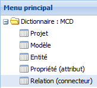
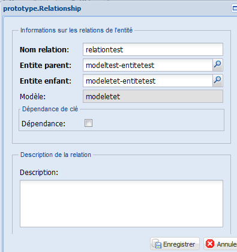

Créer une relation¶
La cinquième étape pour construire un prototype consiste à créer les relations entre les entités du modèle conceptuel de données. Les relations peuvent être créées à partir de l’entité enfant vers l’entité parente ou vice-versa. Les clés étrangères sont générées automatiquement par l’application du prototypeur au moment de créer la relation entre deux entités.
De la même manière que dans les étapes précédentes, il y a deux façons de créer les relations entre les entités. La première façon est de les créer au même moment qu’une nouvelle entité. Quand une nouvelle entité est créée, les contrôles d’édition s’activent sur la grille des « relations de l’entité » du même formulaire. En cliquant sur le bouton ajouter de cette grille, un nouveau formulaire s’ouvrira pour remplir les informations concernant les relations. Les relations sont créées une par une.
La deuxième façon de créer les relations est à partir du menu principal. Nous allons explorer les deux façons dans le texte qui suit.
Créer une nouvelle relation à partir du menu principal¶
Figure 43 : créer une relation.
- À partir du menu principal, cliquez deux fois sur Relation pour ouvrir l’onglet Relation qui donne accès à la grille principale.
- Cliquez sur le bouton Éditer du menu de fonctionnalités pour rentrer en mode d’édition (voir la fonction éditer pour plus détails).
- Cliquez sur le bouton Ajouter, un formulaire sera affiché sur l’écran.
- Dans le formulaire, remplissez (voir figure 44) :
- le nom de la relation (information obligatoire). Comme bonne pratique, composez les noms de vos relations en commençant par le nom de l’entité enfant suivi du nom de l’entité parent. Les deux noms séparés par un trait d’union, exemple séjour-chalet.
- le nom de l’entité parent (information obligatoire). Cliquez sur le bouton
pour sélectionner l’entité de la liste.
- le nom de l’entité enfant (information obligatoire). Cliquez sur le bouton
- cochez la caisse de la dépendance de clé si la connectivité du côté enfant est dépendante : 1,1. Si votre connectivité est 1,1 ne cochez pas cette caisse.
- la description de la relation (information optionnelle).
- Cliquez sur le bouton Enregistrer de la fenêtre.
Créer une nouvelle relation à partir du formulaire de l’entité¶
Figure 44 : créer une relation details.
- À partir du formulaire de l’entité, cliquez sur le bouton Ajouter de la grille « relations filtrées par ” ” ».
- Un nouveau formulaire (comme celui de la figure à gauche) s’affichera dans l’interface.
- Dans le formulaire, remplissez :
- le nom de la relation (information obligatoire). Comme bonne pratique, composez les noms de vos relations en commençant par le nom de l’entité enfant suivi du nom de l’entité parent. Les deux noms séparés par un trait d’union, exemple séjour-chalet.
- le nom de l’entité parent (information obligatoire). Cliquez sur le bouton
- le nom de l’entité enfant (information obligatoire). Cliquez sur le bouton
- cochez la caisse de la dépendance de clé si la connectivité du côté enfant est dépendante : 1,1. Si votre connectivité est 1,1, ne cochez pas cette caisse.
- la description de la relation (information optionnelle).
- Cliquez sur le bouton Enregistrer de la fenêtre.